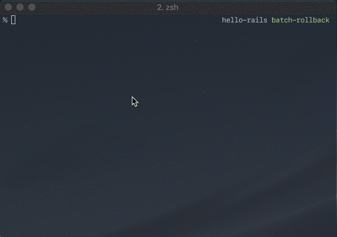

db:migrateした分だけdb:rollbackするrubygemを書いた
naoty/batch_rollbackというrubygemを書いた。

これはdb:migrateでmigrateしたversionやステップ数を記録しておいて、db:rollbackでまとめてrollbackできるようにする。
モチベーション
このrubygemを書いた動機としては、ロールバックを安全に自動化したかった。Railsアプリケーションをロールバックするにはrails db:rollbackを行うことになるが、そのとき問題になるのはSTEPをいくつにするかということがある。リリース時にdb:migrateしたmigrationファイルがいくつあったかはリリースごとに異なるため、ロールバックを自動化する上で問題になる。
そこで、db:migrate時にmigrateされたバージョン数を記録しておき、db:rollbackのSTEPに指定するrubygemを書いた。
仕組み
db:migrateの前後にRakeタスクを追加し、migrationされたバージョンやステップを記録している。あるRakeタスクの前後に実行させたいRakeタスクを追加するにはRake::Task#enhanceを使う。Railtieで#enhanceしたい場合はRailtie.rake_tasksブロック内で行う。
module BatchRollback
class Railtie < Rails::Railtie
rake_tasks do
namespace :batch_rollback do
task :pre_migration do
end
task :post_migration do
end
end
Rake::Task["db:migrate"].enhance(["batch_rollback:pre_migration"]) do
Rake::Task["batch_rollback:post_migration"].invoke
end
end
end
end
migrationされたバージョンやステップの記録はrubygem内に定義したちょっとしたmodelから行っている。
module BatchRollback
class MigrationStep < ActiveRecord::Base
end
end
こうしたmodelのためのテーブルを作成するには、migrationを使うわけにはいかないので、ActiveRecord::ConnectionAdapters::SchemaStatements#create_tableを利用する。このメソッドを使うとmigrationで使うDSLを使って簡単にテーブルを作成できる。
module BatchRollback
class MigrationStep < ActiveRecord::Base
class << self
def create_table
connection.create_table(table_name) do |t|
t.string :current_version
t.string :target_version
t.integer :step
end
end
end
end
end
こういったテクニックを組み合わせることで今回のrubygemを実装することができた。